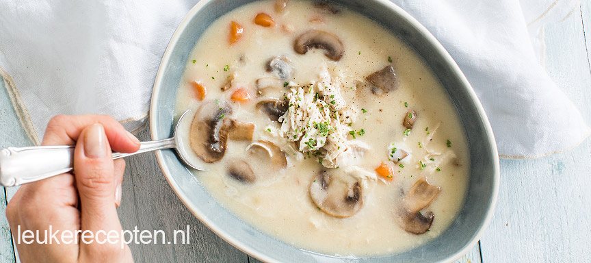

Romige kippensoep met champignons
Van een kommetje van deze kippensoep met champignons knap je weer op!
Ingediënten
- 1 liter kippenbouillon
- 250 gr champignons
- 100 ml room
- 50 gr boter
- 60 gr bloem
- 60 gr wortel
- 1 grote kipfilet
Bereidingswijze
- breng een pan met water aan de kook
- Doe hier de kipfilet in en kook in ca 15 minuten gaar
- Bak in een koekenpan de champignons lichtjes aan
- Smelt ondertussen in een andere (soep)pan de boter en voeg hier vervolgens de bloem aan toe. Roer met een garde door elkaar en laat deze roux een paar minuutjes zachtjes bakken
- Giet dan de kippenbouillon er beetje bij beetje bij en blijf roeren met de garde.
